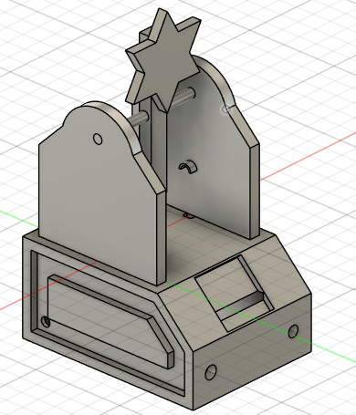
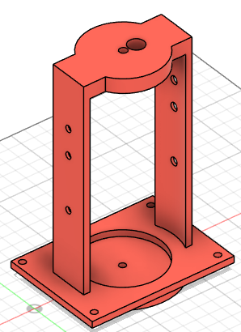
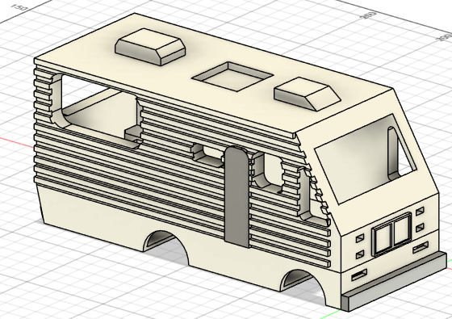
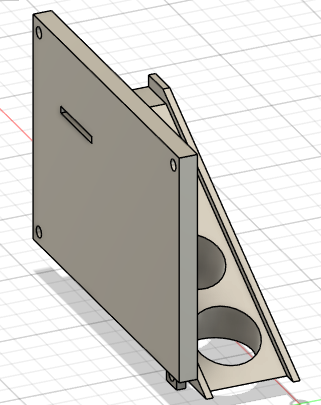
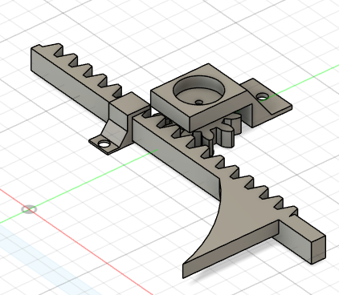

He realizado modelado 3D para su posterior impresion para la realizacion de proyectos
Un modelo inspirado en las maquinas que hay en restaurantes para llenar los vasos con agua gaseosa, toda la electronica de dicha maquina se baso en transistores, temporizadores, operacionales... la pieza se llevo a la realidad con la ayuda de una cortadora laser en carton piedra.

El diseño se mando a la impresora 3D el proposito era identificar que un disparo fue acertado, se baso en un esp-32 y se decoro con luces led y pantalla oled para llevar el control del puntaje.
Documentacion de codigo
[Ver código en GitHub]Al colocar el vaso en el recipiente se llena de manera automatica, la cantidad de agua depende del tamaño del vaso, el cual es detectado con un laser y una LDR, la electronica se baso en reles, capacitores, y resistencias.
Fue un diseño que lo hice como hobbie inspirado en el carro de la Serie de Breaking bad, aun lo tengo pendiente pero pienso trabajarlo en el futuro para decoracion de dormitorio, con funcion de humidificador
Esta pieza sirvio como ayuda de un proyecto donde se queria un sistema de pago de monedas, es decir atraves de la diferencia de los tamaños de las monedas se reconoce el valor
Atravez de un piñon y una cremallera se creo el cilindro mecanico para una banda clasificadora, inspirada en las mesas de Festo
